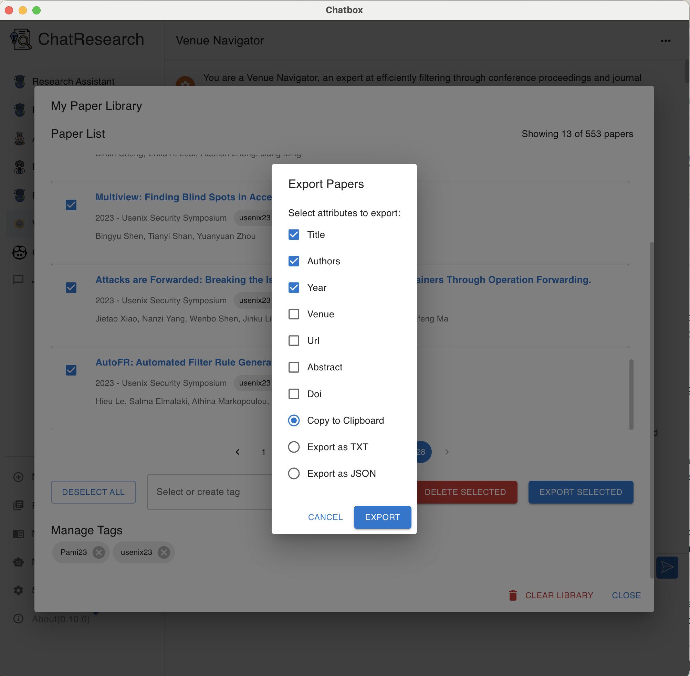
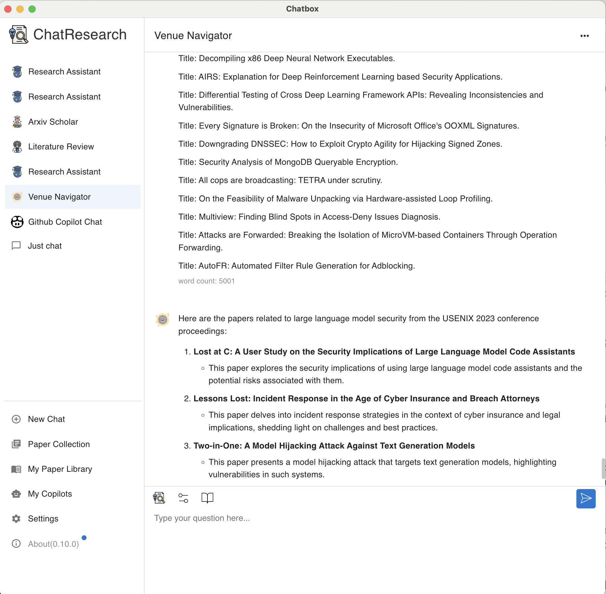

ChatResearch supports multiple AI models to power your research assistant. Here's how to set them up:
AI Models setup interface in ChatResearch
DBLP (Digital Bibliography & Library Project) is a comprehensive bibliographic database for computer science literature. You can access DBLP at https://dblp.org/. This feature allows you to collect papers from specific venues using DBLP links.
The system generates DBLP links for specific conferences and journals. For example:
Always verify the URL's correctness before crawling, as DBLP's structure may vary for different venues.
DBLP Collection Interface in ChatResearch
Paper Import and Tagging Process
ChatResearch allows you to seamlessly import your paper collection from Zotero, a popular reference management software. This feature enables you to quickly populate your ChatResearch library with papers you've already organized in Zotero.
This process allows you to quickly transfer your curated paper collection from Zotero to ChatResearch, maintaining your existing organization and making your research materials immediately accessible for AI-powered analysis and chat interactions.
Importing papers from Zotero to ChatResearch
arXiv is a free distribution service and an open-access archive for scholarly articles in various fields, including physics, mathematics, computer science, and more. ChatResearch allows you to search and import papers directly from arXiv, keeping you up-to-date with the latest research in your field.
arXiv Search and Import Interface in ChatResearch
In the side menu, you can access your paper library. It shows the total number of papers, total tags you have, and the size of the library.
Paper Library Interface in ChatResearch
Paper Export Options in ChatResearch
In the side menu, choose "My Copilots". The "My Copilots" feature allows you to access and create specialized AI assistants tailored for various research scenarios. These copilots come with pre-configured prompts to enhance your research experience.
My Copilots Interface in ChatResearch
The Research Chat feature allows you to engage in AI-powered discussions about your research papers. You can select specific papers, choose what information to include, and interact with your chosen copilot for insightful conversations.
You can export paper information to your clipboard for use outside of ChatResearch. This is particularly useful if you're a paid user of services like ChatGPT or Claude and want to continue your research discussions there.
Selecting Papers and Information for Chat
Example of Research Chat